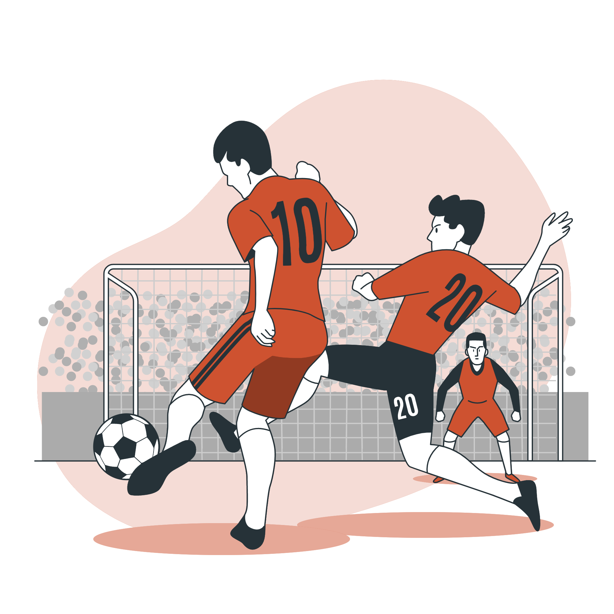

Action is the foundational key to all success.

自己紹介
| 名前 | ラットラン太郎 |
|---|---|
| 生年月日 | 2000/12/25 |
| 所属 | ○○大学所属 四年生 |
| スキルセット | HTML、CSS、SCSS、Javascript、Vue.js、GitHub |
| 役割 | フロントエンジニア |
| 趣味 | サッカー鑑賞 |
私はこんな人間です
私は周りから「協調性がある」と言われます。私はサッカー部に所属していて、部長などのポジションではありませんでしたが、チームの話し合いの場ではみんなの意見をまとめる役目を担ってきたからだと思います。 チームとして優秀な成績を収めていたわけではありませんが、メンバー間の意思疎通を図ることで、レベルアップや成績向上につながることを実感できました。意見を尊重しすぎると自分の意見やその他の意見とのバランスが悪くなるので、ひとつの意見を聞きすぎることなく自分の意見も取り入れられるようになりたいと考えています。

私の興味
開発の言語/環境はめまぐるしく変わっていると日頃から感じています。 そんな中で、実際の物作りに活かせる新しい技術を取得することは、自身の技術の幅を広げるだけでなく、知らなかったこと、できなかったことに挑戦できる成長のきっかけを与えてくれると考えています。 そのため、新しい技術取得に常にアンテナを張り、どんな状況にも対応できるITエンジニアを目指しています。
こんな開発がしたい
私はゆくゆくはユーザビリティから考えてweb開発をしていきたいと考えております。 今まではWeb言語のプログラミングを多く学んできましたが、現代のweb開発ではデザインなどのマーケティング的な発想が必要になると思い、学業の傍ら独学で勉強をしてきました。 デザインに関しては知識不足なところもありますが、今後も勉強を怠らず、御社の企業理念と将来性を伝えられるような唯一無二のweb開発ができる人材を目指して努力していきたいと思っております。

経歴
〇〇県立高校
サッカー部に
所属し、県Best8
に入りました。
〇〇大学
経済学を専攻
していました。
〇〇居酒屋
コミュニケーシ
ョン力を身に
つけました。
ラットラン
フロント技術を
勉強しました。